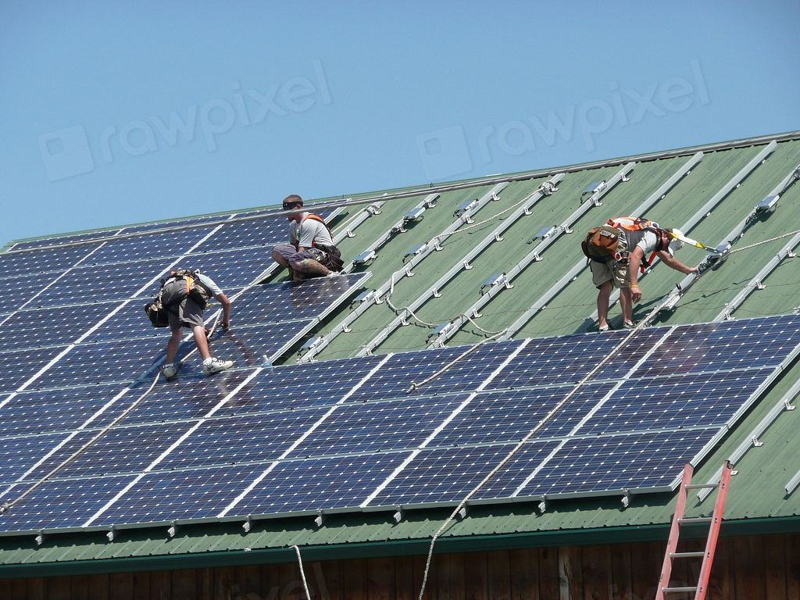
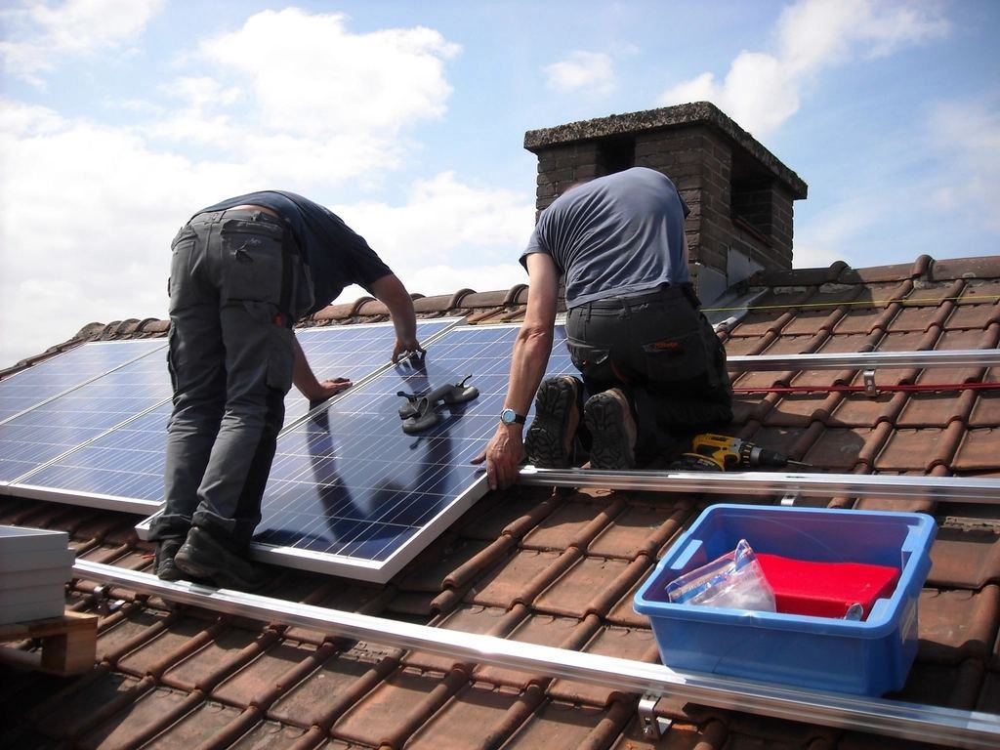
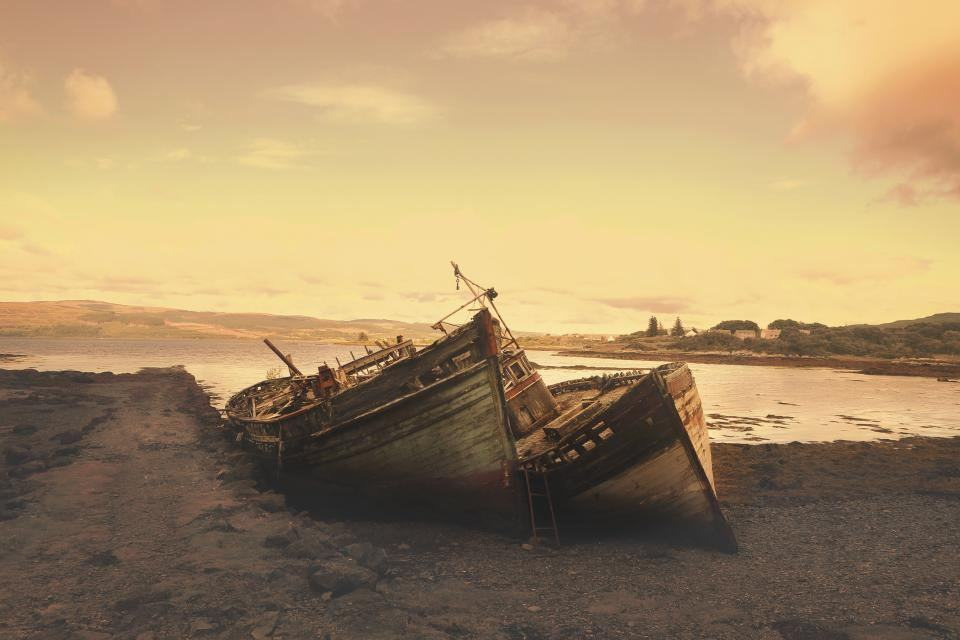
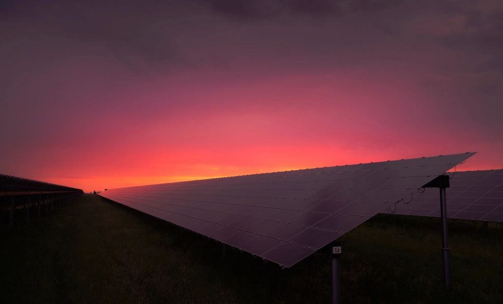
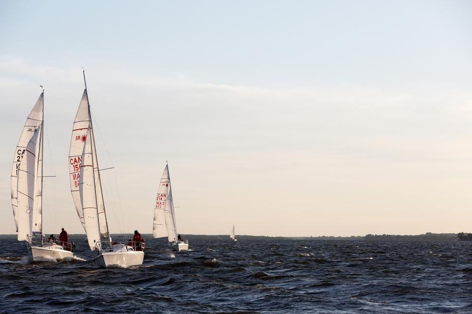

Tjänster
I dag är vi elva personer med verkstad och sjösättningsramp i Tjurkö hamn. Vi har byggt 23 flytande anläggningar från 50 kW till 2,4 MW i Blekinge, Kalmar län och Kronoberg och tillverkar förankringar och gångbryggor själva.
Vilket vatten har ni?

Lantbrukets bevattningsdammar
Grönsaksodlare och fruktgårdar har ofta en damm som bara används några veckor om året. En anläggning som täcker 40 procent av ytan producerar el och minskar avdunstningen med upp till en tredjedel.
Elen driver bevattningspumparna, kylrummen och packeriet.

Grustag och nedlagda täkter
När en täkt är uttjänt fylls den med grundvatten och blir en sjö som ingen använder. Vi bygger anläggningar på 1–3 MW där markägaren får ett arrende i trettio år.
Förankringen följer nivåskillnader på flera meter mellan vår och höst.

Reningsverk och vattenverk
Ett reningsverk förbrukar mycket el till luftning och pumpar dygnet runt. Flytande paneler på efterpoleringsdammar eller i närliggande bassänger ger nästan full egenanvändning.
Vi har byggt åt två VA-bolag i Blekinge.

Industrins processdammar
Industrier med kyldammar eller dagvattenmagasin har ofta ont om tak men gott om vatten. Vi bygger utan att störa vattnets funktion.
Paneler och flottörer tillåter syresättning och inspektion av dammen.
Från flygbild till förankring
- 1

Flygbild och djupkarta
Vi bedömer vattnet från flygfoto och mäter djup och botten med ekolod från båten.
- 2

Anmälan och samråd
Anmälan om vattenverksamhet, samråd och vid behov naturvärdesinventering.
- 3

Bygge på stranden
Sektionerna monteras på land och sjösätts en i taget.
- 4

Förankring och drift
Vi förankrar mot botten eller stranden och inspekterar från båt två gånger om året.
El, båtbygge och säkerhet på vatten
- Auktorisation för elinstallationElsäkerhetsverkets auktorisation med egenkontrollprogram anpassat för anläggningar på vatten.
- BåtbyggarexamenTvå medarbetare har yrkesexamen som båtbyggare och bygger alla flottörfästen och bryggor.
- Säkerhet vid arbete på vattenAlla som arbetar på anläggningarna har utbildning i livräddning och arbete från båt.
- ISO 14001Certifierat miljöledningssystem med rutiner för arbete nära vatten och känsliga miljöer.